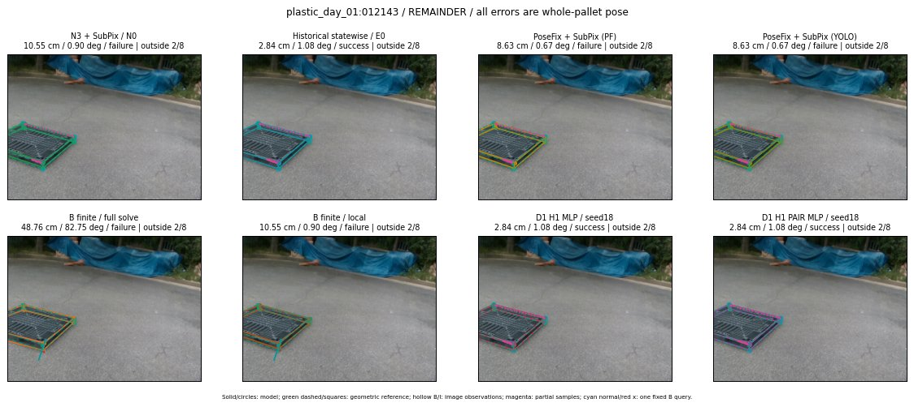
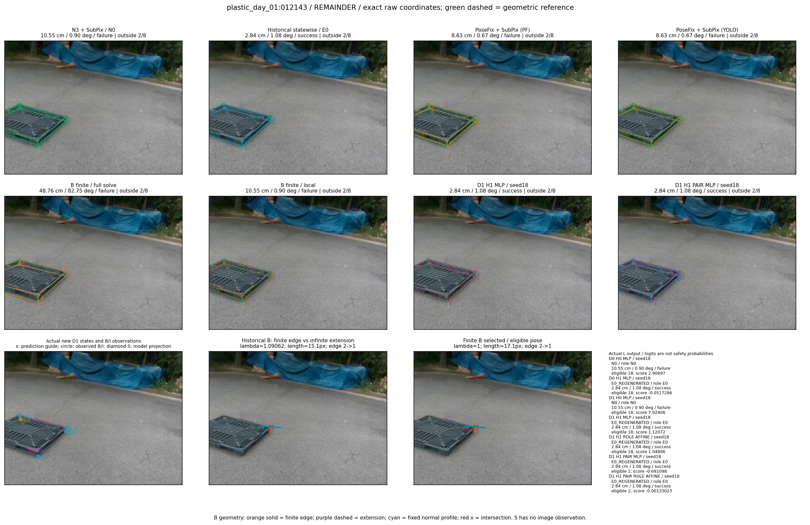

Whole-pallet pose errors; reference is a fixed geometric annotation, not certified physical GT.


Scores are uncalibrated logits. N0 retention is a numerical pose alias; it differs from H0 none or B fallback. B/I and profiles in baseline/B panels are original observations; L panels use new D1 observations. Only one deterministic supported B query is shown in a thumbnail; full support counts are below. Grey privacy rectangles edit the display copy only and are unrelated to O states; all observations were measured on original pixels. Thumbnails use JPEG quality85; detailed scientific panels are PNG.
| Method | Whole pose / cm, deg | Actual source | Selected ID | Score | Archived candidates | Eligible | N0 retained | H0 none | Fallback | Finite profiles |
|---|---|---|---|---|---|---|---|---|---|---|
| Raw YOLO + F | 8.06 cm / 0.69 deg / failure | OTHER | None | N/A | N/A | N/A | False | N/A | None | N/A |
| N3 + SubPix / N0 | 10.55 cm / 0.90 deg / failure | N0 | None | N/A | N/A | N/A | True | N/A | None | N/A |
| Historical statewise / E0 | 2.84 cm / 1.08 deg / success | E0_REGENERATED | None | N/A | N/A | N/A | False | N/A | False | N/A |
| PoseFix raw | 8.26 cm / 0.80 deg / failure | OTHER | None | N/A | N/A | N/A | False | N/A | None | N/A |
| PoseFix + SubPix (PF) | 8.63 cm / 0.67 deg / failure | OTHER | None | N/A | N/A | N/A | False | N/A | False | historical support records 9; finite audit N/A |
| PoseFix + SubPix (YOLO) | 8.63 cm / 0.67 deg / failure | OTHER | None | N/A | N/A | N/A | False | N/A | False | historical support records 9; finite audit N/A |
| Historical L, seed18 | 10.55 cm / 0.90 deg / failure | N0 | N0 | N/A | 47 | 47 | True | True | True | N/A |
| Historical B fixed bank | 2.84 cm / 1.08 deg / success | E0_REGENERATED | G13/ORIGINAL_WD/sample/0 | N/A | N/A | N/A | False | N/A | False | N/A |
| Historical B full | 0.98 cm / 0.77 deg / success | OTHER | NEW/B/ORIGINAL_WD/h0/G13/ORIGINAL_WD/sample/0/PROPOSED_NATIVE_YAW_0 | N/A | N/A | N/A | False | N/A | False | N/A |
| Historical edge full | 77.65 cm / 17.24 deg / failure | OTHER | NEW/edge/ORIGINAL_WD/h0/G13/ORIGINAL_WD/sample/0/PROPOSED_NATIVE_YAW_0 | N/A | N/A | N/A | False | N/A | False | N/A |
| Historical AB full | 1.07 cm / 0.76 deg / success | OTHER | NEW/AB/ORIGINAL_WD/h0/G13/ORIGINAL_WD/sample/0/PROPOSED_NATIVE_YAW_0 | N/A | N/A | N/A | False | N/A | False | N/A |
| B finite / fixed bank | 52.60 cm / 82.95 deg / failure | OTHER | G10/SWAPPED_WD/sample/1 | N/A | N/A | N/A | False | N/A | False | 25/25 |
| B finite / full solve | 48.76 cm / 82.75 deg / failure | OTHER | NEW_FINITE/B/SWAPPED_WD/h0/G13/SWAPPED_WD/sample/0/PROPOSED_NATIVE_YAW_0 | N/A | N/A | N/A | False | N/A | False | 25/25 |
| B finite / local | 10.55 cm / 0.90 deg / failure | N0 | N0 | N/A | N/A | N/A | True | N/A | True | N/A |
| Edge finite / full solve | 52.60 cm / 82.95 deg / failure | OTHER | G10/SWAPPED_WD/sample/1 | N/A | N/A | N/A | False | N/A | False | 25/25 |
| D0 H0 MLP / seed18 | 10.55 cm / 0.90 deg / failure | N0 | N0 | 2.9069719314575195 | 18 | 18 | True | True | True | N/A |
| D0 H0 MLP / seed19 | 10.55 cm / 0.90 deg / failure | N0 | N0 | 3.436521053314209 | 18 | 18 | True | True | True | N/A |
| D0 H0 MLP / seed20 | 10.55 cm / 0.90 deg / failure | N0 | N0 | 0.541763186454773 | 18 | 18 | True | True | True | N/A |
| D0 H1 MLP / seed18 | 2.84 cm / 1.08 deg / success | E0_REGENERATED | E0_REGENERATED | -0.05172864347696304 | 18 | 18 | False | False | False | N/A |
| D0 H1 MLP / seed19 | 2.84 cm / 1.08 deg / success | E0_REGENERATED | E0_REGENERATED | -0.5091618299484253 | 18 | 18 | False | False | False | N/A |
| D0 H1 MLP / seed20 | 2.84 cm / 1.08 deg / success | E0_REGENERATED | E0_REGENERATED | -1.1308704614639282 | 18 | 18 | False | False | False | N/A |
| D1 H0 MLP / seed18 | 10.55 cm / 0.90 deg / failure | N0 | N0 | 7.024058818817139 | 18 | 18 | True | True | True | N/A |
| D1 H0 MLP / seed19 | 10.55 cm / 0.90 deg / failure | N0 | N0 | 6.758388996124268 | 18 | 18 | True | True | True | N/A |
| D1 H0 MLP / seed20 | 10.55 cm / 0.90 deg / failure | N0 | N0 | 6.369775295257568 | 18 | 18 | True | True | True | N/A |
| D1 H1 MLP / seed18 | 2.84 cm / 1.08 deg / success | E0_REGENERATED | E0_REGENERATED | 1.1207224130630493 | 18 | 18 | False | False | False | N/A |
| D1 H1 MLP / seed19 | 2.84 cm / 1.08 deg / success | E0_REGENERATED | E0_REGENERATED | 0.766657292842865 | 18 | 18 | False | False | False | N/A |
| D1 H1 MLP / seed20 | 2.84 cm / 1.08 deg / success | E0_REGENERATED | E0_REGENERATED | 1.078628659248352 | 18 | 18 | False | False | False | N/A |
| D1 H1 ROLE AFFINE / seed18 | 2.84 cm / 1.08 deg / success | E0_REGENERATED | E0_REGENERATED | 1.048055648803711 | 18 | 18 | False | False | False | N/A |
| D1 H1 ROLE AFFINE / seed19 | 10.55 cm / 0.90 deg / failure | N0 | N0 | 0.17324170470237732 | 18 | 18 | True | False | False | N/A |
| D1 H1 ROLE AFFINE / seed20 | 2.84 cm / 1.08 deg / success | E0_REGENERATED | E0_REGENERATED | 0.6859948635101318 | 18 | 18 | False | False | False | N/A |
| D1 H1 PAIR MLP / seed18 | 2.84 cm / 1.08 deg / success | E0_REGENERATED | E0_REGENERATED | -0.6910979747772217 | 18 | 2 | False | False | False | N/A |
| D1 H1 PAIR MLP / seed19 | 2.84 cm / 1.08 deg / success | E0_REGENERATED | E0_REGENERATED | -0.3046185374259949 | 18 | 2 | False | False | False | N/A |
| D1 H1 PAIR MLP / seed20 | 2.84 cm / 1.08 deg / success | E0_REGENERATED | E0_REGENERATED | 0.30827704071998596 | 18 | 2 | False | False | False | N/A |
| D1 H1 PAIR ROLE AFFINE / seed18 | 2.84 cm / 1.08 deg / success | E0_REGENERATED | E0_REGENERATED | -0.001330230850726366 | 18 | 2 | False | False | False | N/A |
| D1 H1 PAIR ROLE AFFINE / seed19 | 2.84 cm / 1.08 deg / success | E0_REGENERATED | E0_REGENERATED | -0.14529547095298767 | 18 | 2 | False | False | False | N/A |
| D1 H1 PAIR ROLE AFFINE / seed20 | 2.84 cm / 1.08 deg / success | E0_REGENERATED | E0_REGENERATED | -0.16190578043460846 | 18 | 2 | False | False | False | N/A |
| Regenerated common E0 | 2.84 cm / 1.08 deg / success | E0_REGENERATED | E0_REGENERATED | N/A | N/A | N/A | False | N/A | False | N/A |